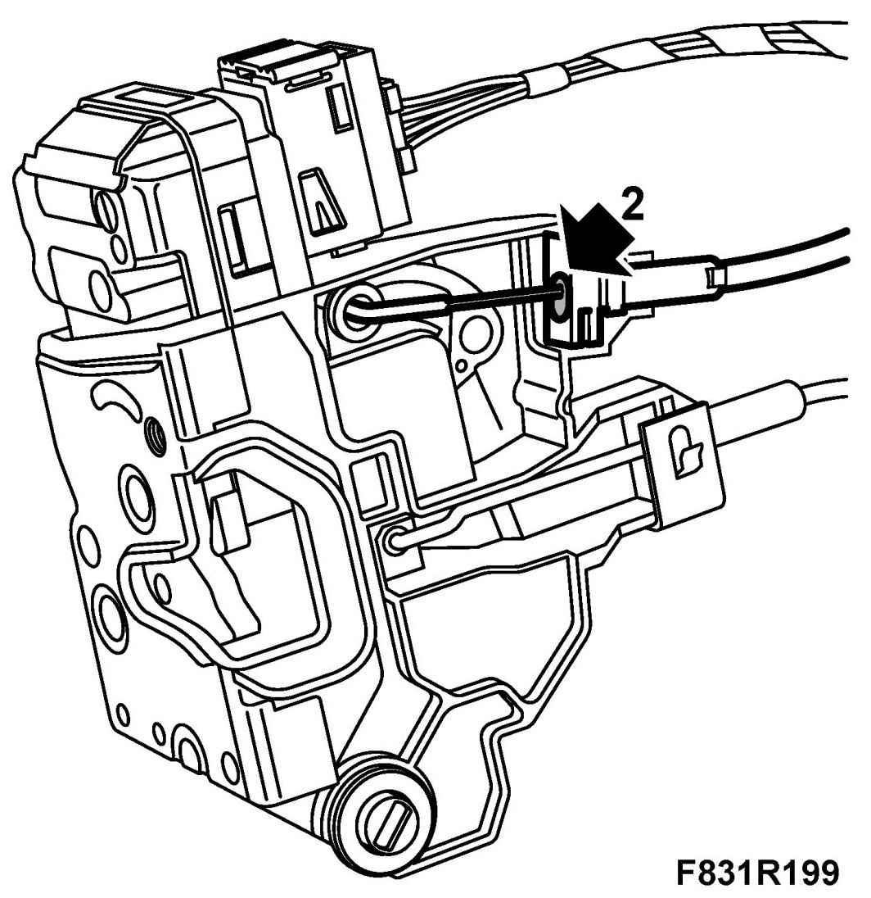

Symptom Related Diagnostic Procedures
Rear Door Will Not Lock/Unlock
Fault symptoms
Rear door will not lock/unlock
Cause: At subzero temperatures, ice can form on the lock cable for the rear door, which can cause the door not to lock/unlock.
Procedure
Thaw the cable so that the lock works. Prevent icing as follows:
1. Make sure the cable is dry.
2. Make sure the lock is in the unlocked position. Apply 82 93 243 Low temperature grease as illustrated.
